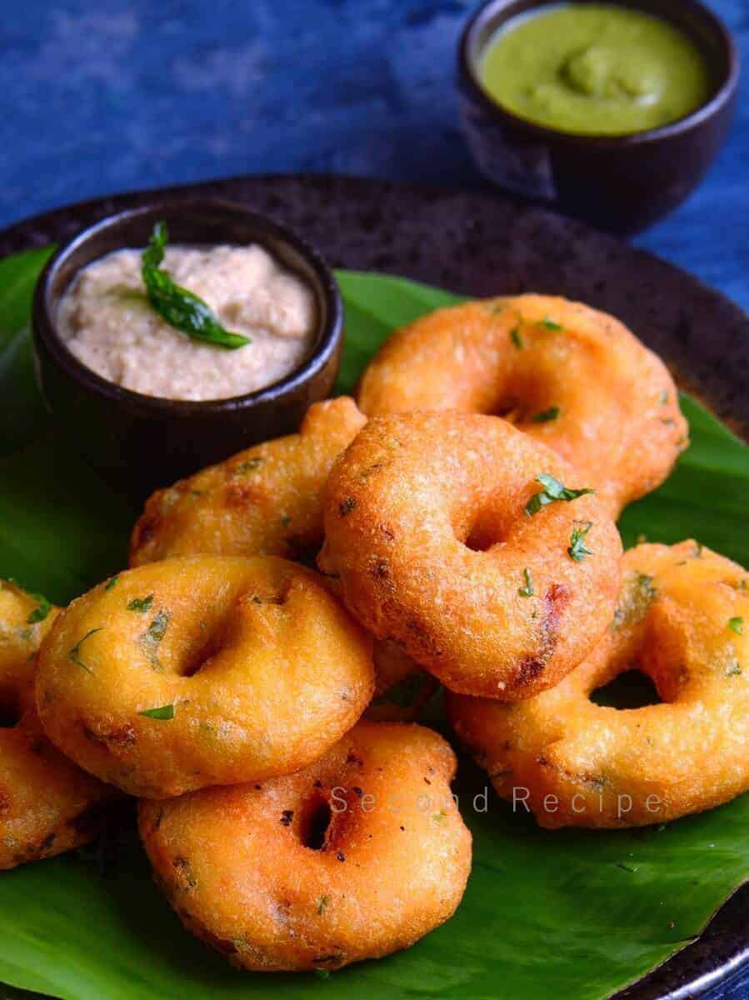

Sure! Here's a simple recipe for making Medu Wada, a popular South Indian breakfast dish:
Ingredients
1 cup urad dal (split black gram)
1 tsp salt (adjust to taste)
1 tsp black pepper (optional)
1 tbsp finely chopped ginger
1-2 green chilies, finely chopped
A few curry leaves, chopped
1 medium onion, finely chopped (optional)
A pinch of asafoetida (hing)
Oil for deep frying
Water as needed
Instructions
Soaking the Dal:
Wash the urad dal thoroughly and soak it in water for about 4-5 hours or overnight.
Grinding the Dal:
Drain the soaked dal and grind it into a smooth, fluffy batter using a wet grinder or a mixer grinder. Add water little by little as needed. The batter should be thick and not watery.
Fermenting the Batter:
If you have time, let the batter ferment for a few hours. This step is optional but helps in making the wadas softer.
Preparing the Batter:
Transfer the batter to a large bowl. Add salt, chopped ginger, green chilies, curry leaves, asafoetida, black pepper, and onions. Mix well.
Shaping the Wadas:
Wet your hands with water. Take a small portion of the batter and shape it into a ball. Make a hole in the center with your thumb to form the traditional wada shape.
Frying the Wadas:
Heat oil in a deep frying pan over medium heat. Once the oil is hot, carefully slide the wadas into the oil.
Fry until they turn golden brown and crispy on both sides.
Remove the wadas using a slotted spoon and drain the excess oil on paper towels.
Serving:
Serve the medu wadas hot with coconut chutney and sambar.
Enjoy your homemade Medu Wada!